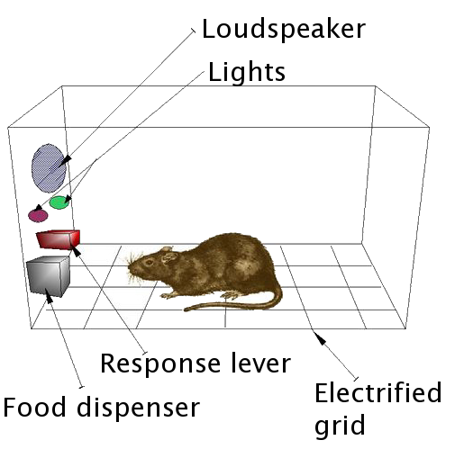

Raymond Chandler III
- Senior Developer - CallCopy Inc.
- Lead Frontend Developer - Insight
- Founder - Agile Hog LLC.
- @raymondchandler on twitter
- @kitanata on github
This talk...
- A little about me
- Game Design & Gamification
- The PeerQA Concept
- The Business Model Canvas
- What I need to make it happen
I've always yearned to own a successful company.
I was 13 years old

Since College
- Avenger Solutions Inc.
- GeoJingle.com
- Educational Technology
- Board Game Publishing
- Agile Hog LLC.
I am a serial entreprenuer.
I have spent the last 4 years studying business.

B.S. Game Design and Development


Red Tape

I love it. Just remove the dice. - Jay Thompson, Rio Grande Games
IT HelpDesk Game
- Resource Management
- Pass the Buck
- Screw your neighbor
- First Prototype in Development
My second most recent startup attempt
- Publishing Board Games w/ Kickstarter Assistance
- 6 weeks of business development
- Supported by Tech Columbus
- Study found idea not economically feasable
- Strong Competitor w/ First Mover(Game Salute)
Some places I've spoken on Game Design

I have spent the last 10 years researching and studying game design.
What is a game?
Raph Koster
Playing a game is the act of solving statistically varied challenge situations presented by an opponent who may or may not be algorithmic within a framework that is a defined systemic model.
Eric Zimmerman & Katie Salen
A game is a system in which players engage in an artificial conflict, defined by rules, that results in a quantifiable outcome.
Chris Crawford
- Creative expression is art if made for its own beauty, and entertainment if made for money.
- A piece of entertainment is a plaything if it is interactive. Movies and books are are non-interactive.
- If no goals are associated with a plaything, it is a toy.
- If a challenge has no "active agent against whom you compete," it is a puzzle; if there is one, it is a conflict.
- Finally, if the player can only outperform the opponent, but not attack them to interfere with their performance, the conflict is a competition.
- However, if attacks are allowed, then the conflict qualifies as a game.
B.F. Skinner

The Skinner Box
What do these have in common?


The Skinner Box
Operant Conditioning Theory (Contexts)
Positive reinforcement (Reinforcement)
Occurs when a behavior (response) is followed by a stimulus that is appetitive or rewarding, increasing the frequency of that behavior.
Negative reinforcement (Escape)
Occurs when a behavior (response) is followed by the removal of an aversive stimulus, thereby increasing that behavior's frequency.
Positive punishment (Punishment)
Occurs when a behavior (response) is followed by a stimulus, such as introducing a shock or loud noise, resulting in a decrease in that behavior.
Negative punishment (Penalty)
Occurs when a behavior (response) is followed by the removal of a stimulus, such as taking away a child's toy following an undesired behavior, resulting in a decrease in that behavior.
Changing Behavior
- Give a clear path to the goal
- Monitor behavior
- Reinforce desired behavior with context
- Reduce Incentives for undesired behavior
Other Concepts
Avoidance Learning
A type of learning in which a certain behavior results in the cessation of an aversive stimulus. (Covering eyes from sunlight)Extinction
Occurs when a behavior (response) that had previously been reinforced is no longer effective.Token Economy
Token economy is an exchange system using the principles of operant conditioning where a token is given as a reward for a desired behaviour. Tokens may later be exchanged for a desired prize or rewards such as power, prestige, goods or services.Chaining
An instructional procedure which involves reinforcing individual responses occurring in a sequence to form a complex behavior.Why does this matter?
Game Mechanics != Gamification
What is the purpose of Gamification?
To provide incentives which affect behavior and increase efficiency.
B.F. Skinner
What is it that keeps people glued in front of slot machines or their computers in these examples?
The Conspiracy
Specially engineered operant conditioning contexts designed to reinforce positive behavior, and reduce negative behavior.
Designed to affect nueral pathways associated with reward.
Designed to be addictive.
What is Gamification?
Token Economy +
The Skinner Box +
Fun Game-like Theme
= Gamification
Let's design a QA system in this way.
Stories
Customer Service Agents
As an agent I am more likely to resepct the opinions of my peers than an outsider QA Analyst.
Customer Service Agents
I dread getting my call's QA'd. It always seems like I'm doing something wrong and noone appreciates how hard I try to do my best.
CSR Supervisors
My team is great. They laugh, joke, and have fun with what they do but they just don't seem to take our QA Analysts seriously.
Directors
My QA budget is shrinking and quality is barely improving. Isn't there a better way we can do this?
Introducing PeerQA
Insight QA Queue +
CallCopy QA Forms +
Gamification + Social
= PeerQA
Key Usage Concepts
1. Create a culture of open discussion and continuous self improvement.
The Power of Open Discussion
When people know exactly what I say, social pressures encourage me to provide friendly, warm, and positive feedback.
The Virtue of People
Of course I want to be a better person. I just wish people were more nice about it.
The Problem with Criticism
It feels like I'm the only one to ever get told they are doing wrong. No one ever notices when I do something right. It's like people are blind to my virtues but are experts in my flaws.
2. Create an environment where reinforcing positive behaviors is unavoidable.
I am doing really great today. I gained over 600 points, earned a badge for getting the new greeting down and only got 1 "Boo" in the process! I rock!
Ryan is back at the top of the leaderboard...again. I need to find out what he's doing so I can beat him
3. Encourage competition with clear paths to achievement.
4. Publically reward and recognize success.
Agents
1. Explore my performance relative to my peers.
2. I will provide honest feedback to my peers.
3. I can see a clear path to improve myself.
Supervisors
1. I will moderate discussion to ensure a positive environment for my team.
2. I will give minimal but direct feedback to my team.
3. I will focus on empowering my team, encouraging them to participate in open discussion and critique.
4. I will configure the rewards and goals of my team according to the best interests of my company.
The Features
Feature Overview
- Advanced QA Pairing Engine
- Notification Engine
- Monitored Communication Channels
- Quantative Scoring Model
- Comment Based Feedback Model
Feature Overview (cont)
- Tag Based Feedback Model
- Configurable QA Forms w/ Metrics
- Configurable Goals and Rewards
- Configurable Tags
- Configurable Badges
Notifications
When I have done something special
- I have been assigned a new call to review
- I have earned a new Badge
- I have gained in rank on the leaderboard
- I have lost in rank on the leaderboard
When another agent does something that affects me
- Another Agent has finished reviewing my call
- Another Agent has commented on my call
- Another Agent responded to my comment
- Another Agent has upvoted/liked my comments
- Another Agent has "Boo"d my call anonymously
- Another Agent has tagged my call.
When my supervisor does something that affects me
- My Supervisor has sent me a private message.
- My Supervisor has given me a special mention (iRock)
- My Supervisor has moderated my comment in a discussion.
When another agent is rewarded
- Another Agent earned a Badge
- Another Agent scored very highly on a call
- Another Agent recieved a special mention (iRock)
- Another Agent increased in rank on the leaderboard
Supervisor <> Agent Communication
Public or Private
Agent <> Agent
ONLY Public
Points & The Leaderboard
- Points for every Tag, Goal, Form Question, and Comment
- Points are public
- Points are rolling and expire after 30 days
- Leaderboard ranks top X employees + current user
- Rewards require continuous quality from agents
The Booing Mechanic
- Each Agent gets 3 "Boo"s a week they can assign to calls.
- A Boo shows as a private message to another agent.
- The Agent assigns a predefined messages to the Boo
- Booing a call is anonymous
Tags and Badges
- Inspired from LinkedIn's Skills Endorsements
- Agents tag other agents calls with predefinied tag types.
- Tags can only be positive and are anonymous.
- Tags "build" into Badges when a threshold is reached.
- Badges and Tags are "rolling" requiring continous quality.
What I need
A team!
- 2 Developers
- 1 Designer
- Myself
Access to CallCopy Resources
- Product Knowledge
- Competitor Knowledge
- Market Research
- Subject Matter Experts
Your absolute faith, trust, and support in me and my team's ability to deliver an excellent product and company.
My Startup.
My Product.
My Company.
The Development Plan
The MVP (2 months)
- CallCopy QA Forms + Insight QA Queue.
- Improve the QA Forms Configuration
- Develop peer based pairing engine.
Alpha (3 weeks)
- User Profiles
- Comments
- Notifications
Beta (3 weeks)
- Voting Mechanism
- Boo"ing Mechnism
- Private Messaging
- Points and Goals
Charlie (3 weeks)
- Crowdsourced Call Tagging
- Badges
- Leaderboard
After Charlie
- Stronger Social Interaction
- Perfecting the "Skinner Box" effect.
- Build -> Measure -> Learn
- Integration with CallCopy Competitors
- Hire additional staff
The Business Model Canvas
Value Proposition
- Reduces QA costs
- Opens constructive team interaction
- Increases accuracy and effectiveness
- Less prone to corruption/favortism
- Encourages learning and self improvement
Revenue Model
$50 per Agent, Monthly
Key Assumptions
- The value proposition is correct
- Companies will buy and use this tool for QA
- The pricing is correct
- 1000 seat licenses within a year
- 4500 seat licenses within 3 years
- Access to CallCopy's customer base
Key Partners
- CallCopy
- Existing Callcopy Customers
- CallCopy's Competitors
- CallCopy's Competitor's Customers
Key Activities
- Developing the MVP
- Testing the MVP in the marketplace quickly
- Integration with CallCopy
- Working through user feedback
- Integration with CallCopy Competitors
Key Resources
- The CallCopy Relationship
- Distribution through CallCopy's Customer Base
- Distribution through CallCopy's Competitors
Customer Relationships
- Platform is provide as installation on site or as SaaS
- Prove training and support for usage of the app.
Channels
- Sold through CallCopy's Cusomter Base
- Sold idependenty as integration into competitor products
- Can be used independently of CallCopy
Customer Segments
- High Quality Customer Interaction
- A/B Test Sales Processes
- Reduce QA Costs
Cost Structure
- Salary of Employees
- Equipment
- Customer Acquisition
- Research & Development
- Marketing & Sales
Capital
- $160k will provide 6 months of operating capital.
- $200k - $500k followup
Budget
- $27k - Misc expenses and equipment
- $132k - Salary Requirements
- $45k myself
- $80k per additional programmer
- $60k for our designer
- 3 year P&L Projection
The Deal
What I am getting
- My Own Company
- Capital Investment
- Access to CallCopy's Customer Base
- Access to CallCopy's Resources
- Help refining business strategy
What I am giving
- Significant Equity
- A 5 year committment to excellence
- Expansion of CallCopy's Customer Base
- 10MM+ Run Rate within 5 years